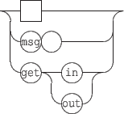

Next: 14.2 Feeding and composing
Up: 14. FAUST plugins
Previous: 14. FAUST plugins
Contents
Index
14.1 Specific meassages
A FAUST processor is characterized by the numbers of input and output channels and by a set of parameters. Each parameter carries a name defined by the FAUST program. The set of messages supported by a FAUST processor is the set of signals messages extended with the parameters names and with specific query messages.

- 1
- msg is any of the FAUST processor parameters, as defined by the FAUST program.
- 2
- the get message is extended to query the FAUST processor: in and out give the number of input and output channels.
Grame - Interlude project [ANR-08-CORD-010]